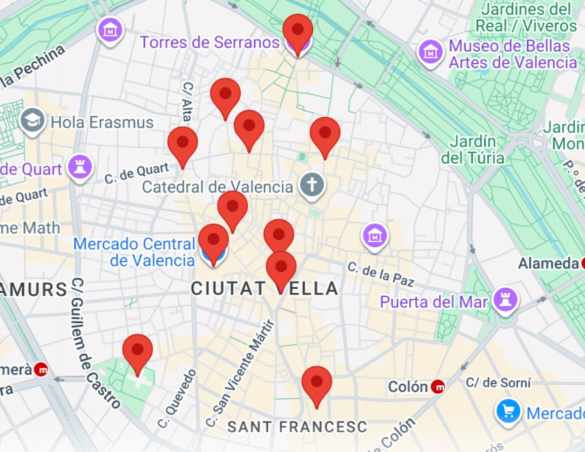

Descubre Valencia
Escucha, mira y siente la historia de la ciudad.
Sobre Veus de Ciutat
"Veus de Ciutat" nace para contar lo que las piedras callan. Somos un proyecto dedicado a revivir la historia de Valencia a través de la tecnología.
Nuestra guía interactiva ofrece narraciones únicas y datos históricos profundos, seleccionados cuidadosamente para que redescubras la ciudad con otros ojos.
Selecciona un lugar
Nombre del sitio
Valencia, España
Selecciona el tipo de contenido que deseas explorar:
Audio Narrado
Guía Histórica
Vídeos
Imágenes